来源：知识星球「南半球聊财经」星主 Jason 不跪当天发帖 当天发帖数量：17 篇（时间 14:01–16:04，美西时区） 本报告全部用中文，逐帖深入解读并解读每张图片，目标是帮你"看得懂 + 学得到东西"。
今日要点速览
今天 Jason 一口气转发了 17 条机构观点，可以归成 6 条主线：
- 黄金的逻辑变了（帖1、2）：过去 4 年央行购金的"主力"是新兴市场尤其海湾产油国，但石油出口受阻后它们现金流收紧，2026 年央行购金已转为净卖出；金价与美国实际利率从"负相关"变成"正相关"，说明这轮金价上涨已脱离传统驱动逻辑，后续动力存疑。
- 中国房地产仍在磨底（帖3、5、6、7）：5 月二手房挂牌价、成交均价继续环比+同比双降，46 个城市同比全部为负（武汉 −21.8% 最惨）；一线去化周期仍高达 18.6 个月；上市房企有息负债连降三年。
- 中国宏观：低利率、稳汇率、防风险（帖9、10、11、13）：调整口径后中国政府杠杆率（含城投）已达 113%、反超日美；中国实际/自然利率双双低于美国；央行追求"年化约 4% 的可控人民币升值"；5 月外储大超预期增 317 亿美元；城投在"资产荒"下被极致定价、风险被低估。
- 汽车寒冬（帖8）：5 月乘用车零售同比 −22.1%，机构把全年销量预测从 −1% 大幅下调到 −11%，行业利润率跌到 3.4% 的历史低位。
- 美元与"美国例外论"（帖4、15）：强劲就业+经济意外指数走高，让市场押注美联储年底加息、美元走强；但摩根士丹利提醒——美股跑赢未必带来强美元，关键看利差。
- 地缘政治主导风险（美以伊冲突 + 油价）+ 海外人口/滞胀（帖12、14、16、17）：美以空袭伊朗推高油价、压低特朗普经济支持率；伊朗经济很惨但韧性强；澳新陷入"滞胀"两难；泰国生育率崩塌至 0.87。
一句话串起来：全球进入"地缘溢价 + 再通胀 + 政策两难"的组合，避险（黄金）逻辑切换、美元偏强、中国走自己的低利率稳增长路线，而房地产和汽车仍是内需的两块拖累。
帖 1 ｜14:01 ｜来源：华泰 ｜标签：#金融#
帖子原文：
华泰：包括海湾国家在内的新兴市场经济体是过去4年全球央行购金"主力"。这是本轮黄金成为短缺冲击下"煤矿里的金丝雀"原因之一，无论是海湾内基建受损的石油出口国，还是石油净进口国，现金流均收紧，但这些国家恰恰是此前中俄之外黄金最大边际买家。海湾国家约6成的能源出口受阻，财政收入的潜在下降幅度或达3-5成。买黄金的能力下降和/或卖出黄金的压力边际上升也在情理之中。

一句话核心： 过去几年金价的最大边际买家是新兴市场央行（尤其海湾产油国），如今它们因油气出口受阻、现金流紧张，买金能力下降甚至要卖金，金价支撑在松动。
背景与关键数据： "央行购金"是指各国央行把外汇储备的一部分换成实物黄金。过去 4 年（2022–2025）金价大涨，很大程度上靠的不是普通投资者，而是各国央行尤其是中国、俄罗斯及海湾产油国在持续大买。华泰这里点出一个新风险：海湾国家约 6 成能源出口受阻（暗指地缘冲突导致航道/出口中断），财政收入可能下降 3–5 成，现金流一紧，买金的钱自然少了，甚至可能反过来卖金换现金。
"煤矿里的金丝雀"是个比喻：旧时矿工带金丝雀下井，鸟先中毒倒下就预警瓦斯泄漏。这里指黄金是"供给/现金流冲击"的早期预警信号。
图片解读： 华泰这张瀑布图（图表5）标题为"2022–2025 年全球央行黄金储备变动"。横轴是各国/机构，纵轴是增减量（图标注"盎司"，但量级实为吨）。蓝色虚线框是"石油净进口国"——中国 +361、波兰 +319、土耳其 +154、印度 +126，是买入主力；红色虚线框是"出口受阻的海湾国家"——伊拉克 +74、埃及 +61、卡塔尔 +58 等也在买；右侧出现负值（减持）：德国 −9、玻利维亚 −20、BIS（国际清算银行）−61 等。最右红色长柱是全球累计口径。一图看懂：买金高度集中在少数新兴市场，一旦它们熄火，需求端就缺了"大买家"。
为什么重要 / 对市场的含义： 如果黄金最大的边际买家（央行）放慢甚至转向卖出，金价就少了一个长期支撑，对应黄金股、贵金属资产要警惕"逻辑松动"。同时这也提示：地缘冲突对油气出口国的"杀伤"会通过财政→储备→黄金这条链条传导。
延伸知识： "边际买家"是理解任何资产价格的关键词——价格由"最后一笔成交"决定，谁在边际上多买/多卖，谁就主导短期方向。就像拍卖会，最终成交价由最后还在举牌的那个人决定，而不是全场平均出价。黄金这几年正是"央行边际买入"主导，所以盯紧央行动向比盯散户情绪更重要。
帖 2 ｜14:03 ｜来源：中金 ｜标签：#金融#
帖子原文：
中金：在报告《勿高估全球央行购金的动力》中，我们指出全球央行增持黄金可能后续动力不足。近几年来主要是新兴市场和发展中国家的央行持有黄金数量有所增加，尤其是非浮动汇率经济体。对于这些国家，随着黄金价格上涨以及持续购金，黄金在外汇资产中的占比已上升较多，有的甚至可能出现了超配。黄金作为一种风险资产，波动性大。至于外汇储备中应该配置多少黄金并无统一指标，一个可供参考的数据是国际清算银行（BIS）于2020年的理论研究。到2025年底，部分国家的黄金配置占比已超过BIS的理论最优比例。而发达国家央行因为无需干预汇率，外汇储备本身也比较平稳，截至2025年底，增持黄金的意愿也不甚显著，少数央行还出现小幅减持黄金的现象。近期央行购金数据说明，整体上来看，全球央行购金步伐已放缓。
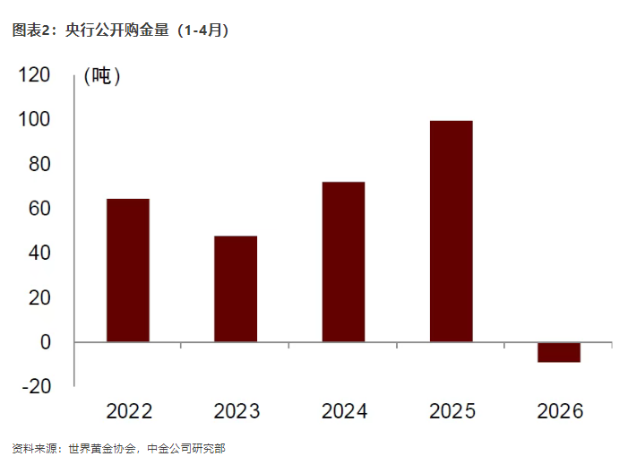
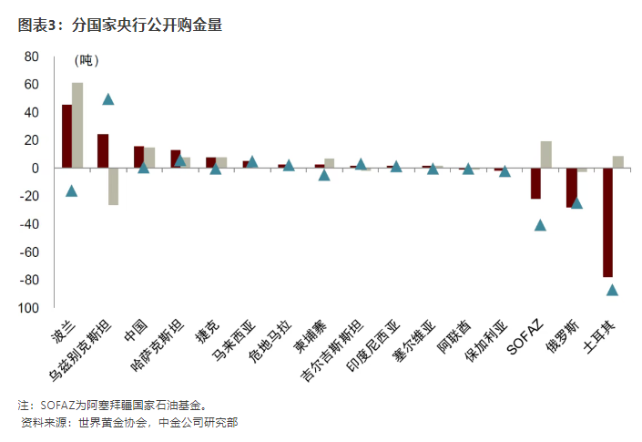
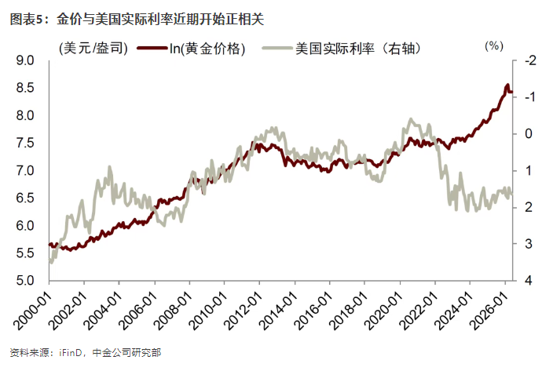
一句话核心： 中金从"配置占比"角度给帖1做了量化补充——很多新兴市场央行的黄金已经"超配"，继续买的空间和意愿都在下降，全球购金步伐确认放缓。
背景与关键数据： "超配"指某类资产在组合里的比例超过了合理/最优水平。中金引用 BIS（国际清算银行，被称为"央行的央行"）2020 年的理论研究作为"最优黄金占比"的参照系，发现到 2025 年底部分国家已超过这个理论值。逻辑链是：金价涨 → 黄金市值占储备比重被动抬高 + 主动继续买 → 占比过高 → 风险集中（黄金波动大）→ 继续加仓的理由减弱。发达国家央行（如德国）因为不需要干预汇率、储备本就稳定，本来就没什么加仓动力，还出现小幅减持。
图片解读：
- 图1（图表2）"央行公开购金量（1-4月）"：纵轴吨。2022 约 64 吨 → 2023 约 48 → 2024 约 72 → 2025 约 99（峰值）→ 2026 同期转为约 −10 吨（净卖出）。趋势从"逐年加码"突然反转，是"放缓"最直观的证据。
- 图2（图表3）"分国家央行公开购金量"：波兰净买入居首（+46/+62 吨），土耳其大幅净卖出（红柱 −78、三角标到 −88），SOFAZ（阿塞拜疆国家石油基金）、俄罗斯也在减持。再次印证：买盘集中、卖盘开始出现，且卖方多与"石油现金流"相关（呼应帖1）。
- 图3（图表5）"金价与美国实际利率近期开始正相关"：深红线是 ln(黄金价格)，灰线是美国实际利率（右轴反向）。历史上两者负相关（实际利率降→金价涨）；但 2022 年后出现背离，转为正相关——实际利率上行金价却还在涨，说明这轮金价是被"央行购金+地缘避险"驱动，而非传统的低利率逻辑。
为什么重要 / 对市场的含义： 帖1+帖2 是同一个判断的"定性+定量"两面：黄金的核心支撑（央行买盘）正在转弱，且金价已脱离利率锚。这意味着金价未来更依赖地缘风险这种"不稳定"的驱动，波动可能加大；对持有黄金/黄金股的人是个"减分项"提示。
延伸知识： "实际利率 = 名义利率 − 通胀预期"。黄金不生息，所以当实际利率高（持有现金/债券能拿到不错的真实回报）时，持有黄金的"机会成本"上升，金价通常承压；反之实际利率低甚至为负时金价受捧。这就是"金价与实际利率负相关"的经典逻辑。今天图3说这个关系"失灵"了，本身就是一个值得记住的信号：当经典关系失效时，往往意味着市场被一股更强的新力量主导（这里是央行+地缘）。
帖 3 ｜14:06 ｜来源：中指院 ｜标签：#房价#
帖子原文：
中指院：5月全国二手房出售挂牌价指数环比下降0.38%，同比下降7.77%；一、二、三、四线城市均环比下降，降幅分别为0.44%、0.55%、0.4%、0.28%。 出租挂牌价指数环比下降0.03%，同比下降2.58%；一、三线城市均环比上涨，涨幅分别为0.17%、0.12%，二、四线城市均环比下降，降幅分别为0.01%、0.33%。
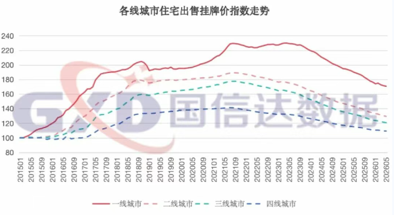
一句话核心： 5 月全国二手房挂牌价继续环比+同比双降，各线城市无一幸免；租金相对抗跌，一线/三线租金还小涨。
背景与关键数据： "挂牌价"是房东在中介平台上的报价（不是真实成交价），是观察市场情绪最及时的领先指标——房东先调报价，再有成交。5 月挂牌价指数环比 −0.38%、同比 −7.77%，二线城市跌得最多（环比 −0.55%）。而租金只同比 −2.58%，比房价跌得温和，一线/三线租金还环比小涨——说明居住需求还在，跌的是"资产价格预期"而非"使用价值"。
图片解读： 图为"各线城市住宅出售挂牌价指数走势"（2015-01 至 2026-05，含国信达数据水印）。红线=一线、粉虚线=二线、绿虚线=三线、蓝虚线=四线。四条线都在 2021 年前后见顶后持续下行，一线城市波动最大、从约 230 的高点回落到约 175。直观显示这是一轮全国性、持续多年的挂牌价下行，而非短期波动。
为什么重要 / 对市场的含义： 房价（尤其二手）是中国居民资产负债表和消费信心的核心变量。挂牌价继续跌 → 财富效应负向 → 压制消费、压制信贷需求（呼应后面帖11"弱信贷需求"）。但租金抗跌+局部回升，是个微弱的"需求底"信号。
延伸知识： 判断房地产可以盯一条传导链："挂牌量→挂牌价→成交量→成交价"。通常房东先增加挂牌（想卖）、再降报价、然后才有放量成交、最后成交价企稳。所以挂牌价是最早的"体温计"。当挂牌价跌幅收窄（而非绝对值回升）时，往往是市场企稳的第一个信号——这也是后面帖5、帖6反复在看的指标。
帖 4 ｜14:10 ｜来源：摩根士丹利 ｜标签：#金融#
帖子原文：
摩根斯坦利：历史数据表明，美股跑赢全球股市时，美元并不总是上涨，很多时候反而下跌。关键变量是美国与其他国家之间的利率差。如果美国股市跑赢，同时美国2年期或10年期利率相对其他国家上升，那么美元通常会温和上涨。但如果美国股市跑赢，同时美国利差收窄，那么美元通常会明显走弱。 我们给一个很实用的量化判断：标普500相对全球股市每跑赢1个百分点，DXY大约会下降16个基点。原因是美股跑赢通常代表风险偏好改善，而美元作为避险货币会受压。需要美国2年期利差扩大约5个基点，才能抵消美股跑赢带来的美元下行压力。 这对现在的市场很关键。因为"美国例外论"有两种形态：第一种是 高利率型美国例外论：美国经济太强、通胀太顽固、美联储还要鹰派。这种情况下美元强。第二种是 风险偏好型美国例外论：AI、美股、科技股继续涨，全球风险偏好改善，但美联储不继续加息。这种情况下美元不一定强，甚至可能转弱。我们认为，目前市场需要判断的是：美国例外论到底是哪一种。
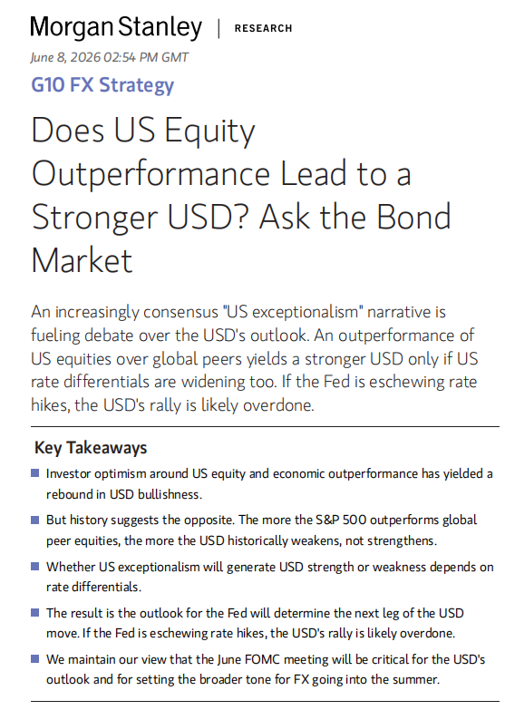
一句话核心： "美股强 = 美元强"是错觉；真正决定美元的是美国和别国的利差。要判断现在的"美国例外论"是"高利率型"（美元强）还是"风险偏好型"（美元可能弱）。
背景与关键数据：
- DXY：美元指数，衡量美元对一篮子主要货币的强弱。
- 利差：美国国债收益率相对其他国家的差值，是跨境资金"逐利流动"的指挥棒——美国利率相对更高，资金涌入美国买债，推升美元。
- 大摩给了个量化锚：标普每跑赢全球股市 1 个百分点，DXY 约下降 16 个基点（1 基点=0.01%）；要抵消这个下行压力，需要美国 2 年期利差扩大约 5 个基点。逻辑是：美股跑赢=全球风险偏好改善=避险货币美元被冷落→美元承压，除非利差同时扩大把资金"吸"回来。
图片解读： 图为摩根士丹利 2026-06-08 的 G10 外汇策略研报封面截图，标题《美股跑赢会带来更强的美元吗？问问债券市场》。要点栏（Key Takeaways）即帖子正文：①投资者对美国例外论的乐观推动了美元反弹；②但历史相反——美股越跑赢，美元历史上越倾向走弱；③结果取决于利差；④6 月 FOMC 会议对美元和整个夏季外汇走向至关重要。
为什么重要 / 对市场的含义： 这条给后面帖15（市场正押注美元走强）提供了一个"反向思考"框架：如果美元这轮走强主要靠"风险偏好型例外论"（AI/美股涨）而非利差扩大，那么强势可能不可持续。判断关键看 6 月 FOMC——美联储是否真的鹰派加息（决定利差走向）。
延伸知识： "美国例外论（US Exceptionalism）"指市场相信美国经济/资产长期优于其他国家。大摩的洞见在于：同样是"看好美国"，背后驱动不同，对美元的含义可能相反。 这是一种很好的分析习惯——不要只看结论（看好美国），要拆解"因为什么而看好"，因为不同的"因"会通过不同渠道（利差 vs 风险偏好）影响价格。
帖 5 ｜14:12 ｜来源：瑞联 ｜标签：#房价#
帖子原文：
瑞联：5月，全国重点城市瑞联EVS存量住宅加权均价为17,755元/㎡，环比跌幅为0.37%，同比跌幅为9.05%。均价环比跌幅连续四个月收窄。
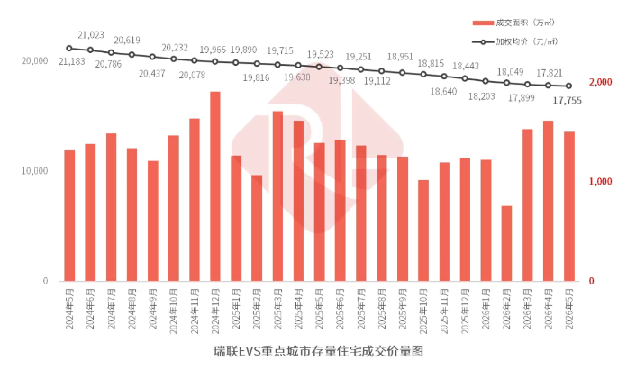
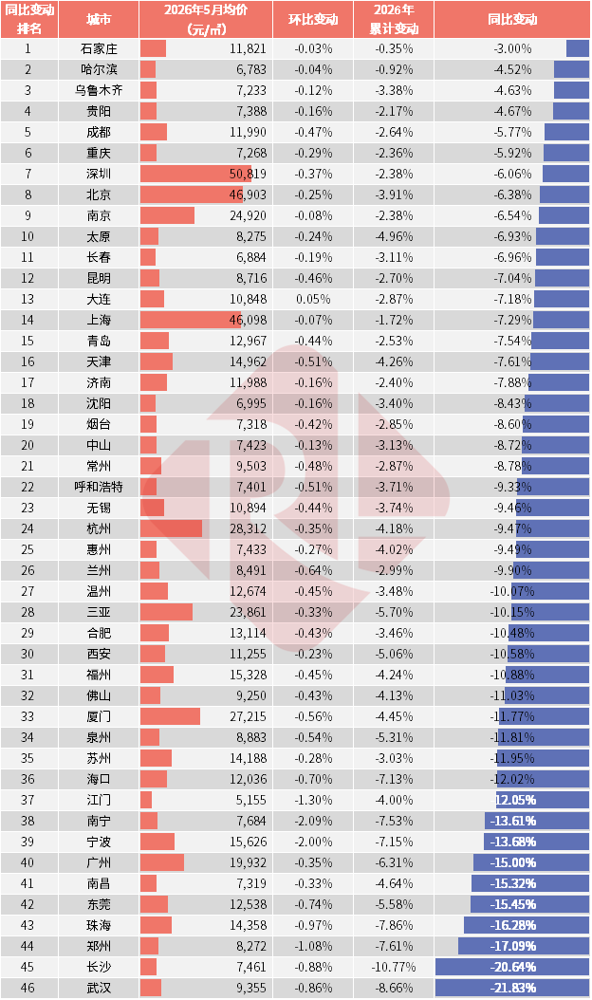
一句话核心： 重点城市二手房成交均价同比 −9.05%，但环比跌幅已连续 4 个月收窄——下跌还在，但"刹车"在起作用。
背景与关键数据： 帖3 看的是"挂牌价"（报价），帖5 看的是成交均价（真实成交）。瑞联 EVS 是基于成交数据的估值体系。重点城市加权均价 17,755 元/㎡，同比 −9.05%（跌幅不小），但环比只 −0.37% 且连续 4 个月收窄。"跌幅收窄"是企稳前的典型形态：先是加速下跌，再是减速下跌，最后才可能止跌。
图片解读：
- 图1"瑞联EVS重点城市存量住宅成交价量图"：柱子=成交面积（万㎡），折线=加权均价（元/㎡）。折线从 2024 年 5 月的 21,183 元/㎡一路下行到 2026 年 5 月的 17,755 元/㎡（两年跌约 16%）；成交面积 2024 年 12 月冲高、2026 年 2 月（春节）探底后回升。
- 图2"46 城同比跌幅榜"：所有 46 个城市同比全部为负。最抗跌：石家庄 −3.00%、哈尔滨 −4.52%、乌鲁木齐 −4.63%；跌最狠：武汉 −21.83%、长沙 −20.64%、郑州 −17.09%、珠海 −16.28%、东莞 −15.45%、广州 −15.00%。绝对价最高仍是深圳 50,819、北京 46,903、上海 46,098 元/㎡。
为什么重要 / 对市场的含义： "全部为负但环比收窄"是当前楼市最准确的画像：没有反转，但在筑底。 区域分化极大——一线（除广州）和强二线相对抗跌，部分弱二线（武汉、长沙、郑州）跌幅惊人，提示买房/投资要高度看城市、看地段，不能用"全国均价"一刀切。
延伸知识： "环比"是和上个月比（看短期动能/拐点），"同比"是和去年同月比（看中长期趋势、去掉季节性）。看资产价格拐点要先看环比的二阶变化——即"环比跌幅是否在收窄"。跌幅收窄→减速→可能见底，这是比"同比仍在跌"更领先的信号。今天瑞联强调的正是这个"环比连续 4 个月收窄"。
帖 6 ｜14:15 ｜来源：JPM（摩根大通）｜标签：#房价#
帖子原文：
JPM：最近一线城市二手房挂牌量继续下降，说明库存压力略有缓和，按照过去12个月滚动销售量计算，隐含去化周期从4月的18.8个月 小幅降至18.6个月，不过18个月左右的去化周期仍然偏高。但一线城市二手房挂牌价指数仍然没有明显改善。两个内地领先指标，中原一线城市二手房挂牌价指数维持在 17.7。这个指数的含义是：有多少项目上调挂牌价。指数17.7意味着真正提高挂牌价的项目比例仍然很低。中原经理人信心指数维持在 54。这个指数超过50说明市场情绪偏正面，但54并不算非常强。 香港房价年初至今上涨9.6%，距离我们2026年全年房价上涨 10%—15% 的预测只差 0.4个百分点。
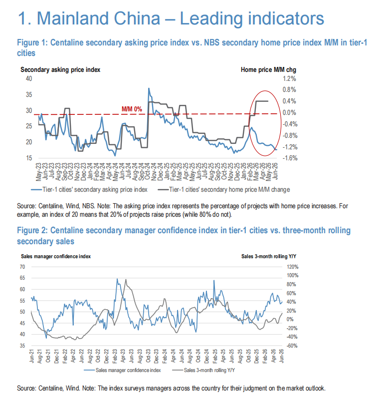
一句话核心： 一线二手房库存压力略缓（去化周期 18.8→18.6 个月）但仍偏高，挂牌价没起色；反差是香港房价年内已涨 9.6%，逼近全年 10–15% 的预测。
背景与关键数据：
- 去化周期：当前库存按近 12 个月的销售速度，需要多少个月才能卖光。18.6 个月意味着库存仍偏高（健康市场一般 6–12 个月）。
- 中原挂牌价指数 17.7：衡量"有多少比例的项目在上调报价"。这个值低（17.7）说明绝大多数房东还在降价或维持，极少数敢涨价。
- 经理人信心指数 54：>50 偏乐观，但 54 只是"弱乐观"。
- 鲜明对比：香港房价年初至今 +9.6%，与内地走势完全相反。
图片解读： JPM"中国领先指标"双图。图1：中原一线二手挂牌价指数（蓝线，约 17.7）与 NBS（国家统计局）二手房环比，红色虚线标"MM 0%"（环比零线），显示挂牌价动能长期在零线下方徘徊。图2：中原一线经理人信心指数（约 54）与 3 个月滚动同比成交。两图都印证正文数据：情绪弱修复，但远谈不上回暖。
为什么重要 / 对市场的含义： 帖3/5/6 三家机构（中指院、瑞联、JPM）从挂牌价、成交价、去化周期三个角度交叉验证，结论一致：内地楼市在筑底但未反转。 而香港的强势提示——同样是中国资产，受不同的利率（香港跟随美元）、资金面、供给政策影响，可以走出完全不同的行情，验证了帖5"高度看城市"的逻辑。
延伸知识： "去化周期"是判断房地产供需的核心指标，公式≈ 现有库存 ÷ 月均成交。它同时受分子（库存/挂牌量）和分母（成交速度）影响——今天去化周期下降是因为"挂牌量减少"（分子降）而非"成交放量"（分母升），这种"被动改善"质量不高。看一个比率改善时，一定要拆开看是分子还是分母在动，这决定了改善是否可持续。
帖 7 ｜14:19 ｜来源：粤开 ｜标签：#A股#
帖子原文：
粤开：2025年末样本房企有息负债存量6.9万亿元，其他负债余额4.88万亿元。
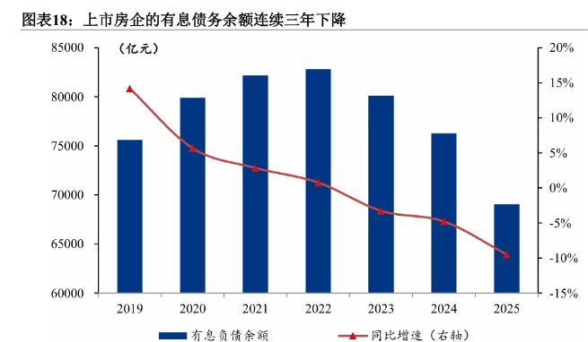
一句话核心： 样本上市房企的有息负债已降到 6.9 万亿元，连续三年下降——行业在"缩表去杠杆"。
背景与关键数据： "有息负债"是要还利息的债务（银行贷款、债券等），是衡量房企真实财务压力的关键。"其他负债"（4.88 万亿）多为预收款、应付工程款等不直接付息的经营性负债。6.9 万亿的有息负债较峰值明显回落，意味着房企在被动+主动地"还债瘦身"。
图片解读： 粤开图表18"上市房企有息债务余额连续三年下降"。蓝柱（亿元）：2019 约 7.56 万亿 → 2021–2022 见顶约 8.28 万亿 → 一路回落到 2025 的约 6.9 万亿。红线=同比增速（右轴），从 2019 的 +14% 一路下滑到 2025 的约 −10%。直观显示房企从"加杠杆扩张"彻底转向"降杠杆收缩"。
为什么重要 / 对市场的含义： 房企缩表是房地产"出清"的必经阶段：好处是系统性金融风险在缓释；代价是房企拿地、开工意愿低，新房供给和上下游（建材、家电、施工）需求持续偏弱，拖累投资。对 A 股地产链是"风险下降但成长缺失"的状态。
延伸知识： "缩表/去杠杆（deleveraging）"指主体主动或被动减少负债。一个行业去杠杆通常伴随"资产负债表衰退"——大家都忙着还债而不是投资扩张，即使利率很低也不愿借钱（呼应帖11"弱信贷需求"）。日本 1990 年代后就是经典案例。理解这点，就能明白为什么中国"降息"对刺激地产的效果有限：问题不在借钱贵不贵，而在大家想不想借。
帖 8 ｜14:38 ｜来源：乘联会 ｜标签：#经济数据#
帖子原文：
乘联会：5月1-31日，全国乘用车市场零售151.0万辆，同比下降22.1%，今年以来累计零售709.9万辆，同比下降19.5%。 2026年1-4月，行业销售利润率进一步降至3.4%。4月3.7%，好于1-3月3.2%的表现，但仍处于历史低位，盈利下行压力持续凸显。近期随着车市生产规模扩大，PPI上行，上游有色金属和石油等矿业利润暴涨，锂电池出口吨单价持续大幅下降，国内电池价格暴涨，车企不造电池的问题普遍且严重，车企利润可持续性下滑。 现预计全年乘用车销量将下降11%，而此前预测为下降1%。
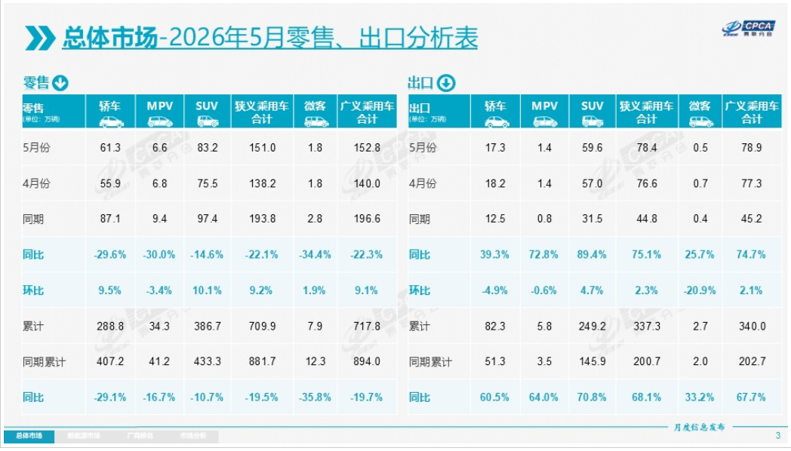
一句话核心： 5 月乘用车零售同比暴跌 22.1%，全年销量预测从 −1% 大幅下调到 −11%；行业利润率跌到 3.4% 历史低位，"价格战"正在吞噬利润。
背景与关键数据：
- 5 月零售 151 万辆、同比 −22.1%；年初至今累计 709.9 万辆、同比 −19.5%——这是非常大的跌幅。
- 行业销售利润率 1–4 月降到 3.4%（历史低位）。利润率低说明"卖得多不赚钱"，价格战把利润打没了。
- 一个细节很关键："上游有色金属/石油矿业利润暴涨""国内电池价格暴涨""车企不造电池的问题普遍"——意思是利润被上游（矿、电池）拿走了，整车厂沦为"打工人"。
图片解读： 乘联会"总体市场—2026 年 5 月零售、出口分析表"，是一张宽幅数据明细表，按车系/级别列出当月零售、出口的销量与同比。表格信息密集，核心结论已在正文给出：零售大幅下滑、出口是相对亮点。
为什么重要 / 对市场的含义： 汽车是消费的"大件"，和地产并列为内需两大支柱。零售 −22% 反映居民"大额可选消费"意愿低迷（与帖3/5 房价下行的财富效应一致）。利润率 3.4% 的"内卷"则提示：行业进入残酷出清期，整车厂盈利承压，反而是上游资源/电池环节更受益——这对投资选股有直接含义（避整车、看上游/有定价权环节）。
延伸知识： "微笑曲线"——制造业里，上游（原材料/核心零部件，如电池、芯片）和下游（品牌/服务）利润高，中间的"组装制造"（整车厂）利润最薄。当行业打价格战，最先被挤压的就是中间环节。今天乘联会说的"车企不造电池就被上游赚走利润"，正是微笑曲线的现实写照。有定价权的环节才有持续利润，这是判断产业链投资价值的通用框架。
帖 9 ｜14:43 ｜来源：信堡 ｜标签：#TAX#
帖子原文：
信堡：资产荒加剧城投定价机制化，整体票面中枢1.94%，部分测算后，和同区域地方债相比已无性价比。极致资产荒并不等于无风险。利率历史低位背后，是机构对城投隐性担保预期的最后定价，而不是对基本面的认可。一旦政策信号出现边际变化（如新一轮化债方案落地、地方财政约束趋严），信用利差的均值回归将极为剧烈。 2025城投年报披露，亏损和问题持续曝光，尤其是广深，陕西等地，反映问题仍在发酵中。西咸等地陆续亏损，引发了级别下调，市场对此定价并不充分，割裂感严重。对报表的重视程度来看，市场仍需教育过程。当下，评级的监管指引逐步加强，需要强化区分度等，后续不排除进一步一些主体信用资质持续分化。
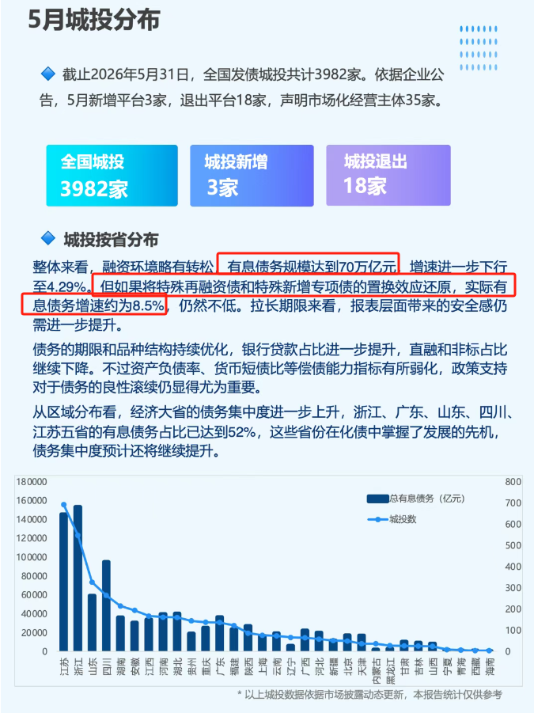
一句话核心： "资产荒"把城投债收益率压到极低（票面中枢 1.94%），但低利率反映的是"市场赌政府兜底"，而非城投基本面变好——风险被严重低估。
背景与关键数据：
- 城投债：地方政府融资平台（LGFV）发行的债券，名义上是企业债，但市场长期相信地方政府会"隐性兜底"。
- 资产荒：钱多、好资产少，机构为了配置只能去抢收益率越来越低的资产，把利率压到 1.94% 的历史低位。
- 信堡的警告很尖锐：低利率 ≠ 低风险，而是"对隐性担保预期的最后定价"。一旦政策边际变化（新化债方案、财政收紧），信用利差会"均值回归"（即利率猛涨、债价猛跌）。2025 年城投年报显示广深、陕西、西咸等地亏损、评级下调，但"市场定价不充分"。
图片解读： 信堡"5 月城投发布"信息图：顶部是全国城投家数、当月发债/退平台家数等汇总统计，下方是分省份的柱状图。配合正文，呈现城投"量"的全景与区域分布，提示风险在区域间分化。
为什么重要 / 对市场的含义： 城投是中国债市最大的"信仰资产"。信堡在提示一个尾部风险：当所有人都相信"政府一定兜底"而把价格买到极致时，任何对这个信仰的微小动摇都会引发剧烈重定价。 对固收投资者意味着——当前城投"性价比已无"，再追高的风险收益比很差。
延伸知识： "信用利差"= 信用债收益率 − 同期限无风险（国债）收益率，是市场对"违约风险"的定价。利差极窄=市场觉得几乎没风险（或确信有人兜底）。"均值回归"指过度偏离的东西终将回到正常水平。两者结合就是信堡的核心担忧：利差被压到极窄是"反身性"泡沫——越相信兜底→越买→利差越窄→越像没风险，直到某个催化剂打破信仰，反向螺旋同样剧烈。 这与帖2 黄金"超配"是同一种"拥挤交易"风险。
帖 10 ｜15:13 ｜来源：中金 ｜标签：#TAX#
帖子原文：
中金：我们测算当前中国政府杠杆率（包括中央政府、地方政府、LGFV）已经达到113%。在调整国内收入后，中国政府杠杆率达95%，超过日本（80%）和美国（67%）。中国实际利率（0.6%）低于美国（1.3%），自然利率（0.3%）低于美国（1.4%）。
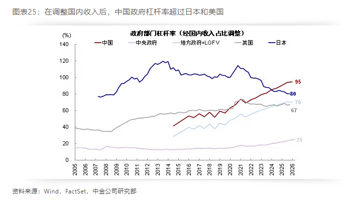
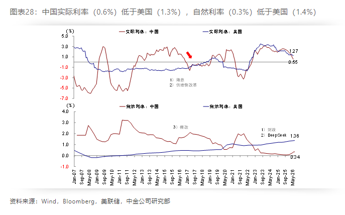
一句话核心： 把隐性债务（城投/LGFV）算进去后，中国政府真实杠杆率高达 113%（按收入口径调整后 95%），已反超日本和美国；同时中国的利率水平双双低于美国。
背景与关键数据：
- 政府杠杆率 = 政府债务 / GDP。官方口径只算显性政府债，但中金把 LGFV（城投，见帖9）的隐性债务也算进来，得到 113%；再"按国内收入占比调整"（因为中国政府收入占 GDP 比重与他国不同，调整后可比）后为 95%，超过日本 80%、美国 67%。
- 实际利率（名义利率减通胀）：中国 0.6% < 美国 1.3%。
- 自然利率（r*，让经济不冷不热的中性利率）：中国 0.3% < 美国 1.4%。
图片解读：
- 图1（图表25）"调整后中国政府杠杆率超日美"：红线（中国）2026 年升到 95，反超日本（深蓝，从 2013 峰值约 120 回落到 80）和美国（灰，67）；其中中央政府只占 25，说明杠杆主要在地方+城投。
- 图2（图表28）"中美实际/自然利率对比"：上半幅，实际利率中国约 0.55% < 美国约 1.27%；下半幅，自然利率中国约 0.34% < 美国约 1.36%（图中标注美国自然利率被"财政""DeepSeek/AI"抬升）。
为什么重要 / 对市场的含义： 两个信息合在一起画像中国宏观处境：高杠杆 + 低利率。高杠杆（尤其地方/城投，呼应帖9）限制了大规模财政刺激空间；低利率（且自然利率低）说明经济内生增长动能弱、投资回报率低，央行必须维持低利率。这也解释了为什么人民币、债市走的是"低利率稳增长"路线（见帖11/13）。
延伸知识： "自然利率（r-star, r*）"是个看不见但极重要的概念：它是让经济既不过热也不衰退的"中性"真实利率，反映一个经济体的长期潜在增长和人口/生产率前景。自然利率低 = 这个经济体长期能提供的真实回报低（常与人口老化、增长放缓相关）。中国自然利率仅 0.3%、远低于美国 1.4%，是"中美增长前景差异"的浓缩表达——也是中美利差长期偏向美国、压制人民币的根本原因之一。
帖 11 ｜15:19 ｜来源：高盛 ｜标签：#经济数据#
帖子原文：
高盛：人民币走强的背后，是央行允许"有序、渐进升值"的政策锚；中国债券利率下行的背后，是弱信贷需求和境内资产配置荒形成的流动性锚。我们判断当前中国经济不是没有压力，而是还没有弱到迫使央行全面降息、降准、大水漫灌的程度。油价驱动的再通胀，使得货币政策更复杂。我们预估央行可接受的节奏大约是年化4%左右的人民币升值速度。人民币升太慢，吸引不了外资；升太快，又会伤出口和制造业；所以政策想要的是"可控升值"。12个月USD/CNY现货可能到 6.50。但短期有超调风险。美元阶段性走强时，会减轻USD/CNY下行压力。5月数据预计出口、进口、CPI、PPI都会明显走高，但信贷仍弱。
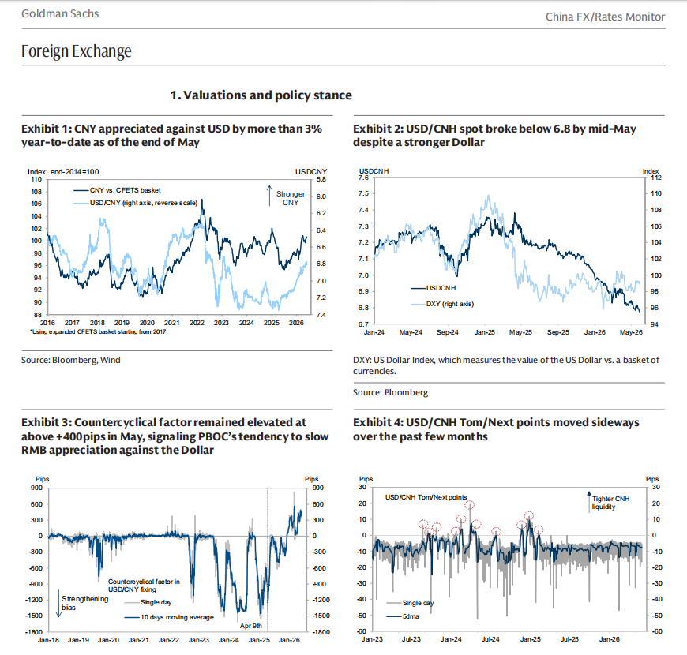
一句话核心： 人民币升值是央行"主动允许的可控升值"（目标约年化 4%），债市利率走低是"弱信贷+资产荒"的结果；高盛预测 12 个月内 USD/CNY 可能到 6.50。
背景与关键数据：
- USD/CNY：1 美元兑多少人民币。数字变小=人民币升值。预测从当前水平走向 6.50（更强人民币）。
- 央行的两难："升太慢吸引不了外资；升太快伤出口和制造业"，所以要"可控升值"，节奏约年化 4%。
- 同时债市利率下行，因为"弱信贷需求"（大家不借钱，呼应帖7资产负债表衰退）+"资产配置荒"（钱没处去，呼应帖9）。
- 复杂变量：油价驱动的"再通胀"（油价涨推高 CPI/PPI）让货币政策更难办——既想宽松撑增长，又怕通胀。
图片解读： 高盛"中国 FX/利率监测"四联图：①人民币兑美元年内升值已超 3%；②USD/CNH（离岸）5 月中跌破 6.8，尽管美元在走强；③逆周期因子 5 月维持在 +400 点以上，信号是央行倾向于"放慢"人民币升值；④USD/CNH 的 Tom/Next 掉期点近几个月走平。四张图共同支撑"央行在主动管理、控制升值节奏"的判断。
为什么重要 / 对市场的含义： 这是理解人民币资产的关键框架：人民币升值不是"中国经济强"的信号，而是"政策允许+美元阶段性变量"的结果。 对出口商、制造业是压力（升值削弱价格竞争力）；对持有人民币资产/想吸引外资是利好。短期美元若走强（见帖15），会缓和人民币的升值压力——这是个对冲变量。
延伸知识： "逆周期因子"是人民币中间价定价里的一个调节项，央行用它来"逆着市场情绪"调节汇率，避免单边超调。它的存在说明人民币汇率是"有管理的浮动"——不是完全市场化，央行有形之手始终在场。理解这点就明白：预测人民币不能只看经济基本面，更要看央行的"政策意图"，这和预测自由浮动货币（如欧元、日元）的思路根本不同。
帖 12 ｜15:29 ｜来源：zerohedge ｜标签：#金融#
帖子原文：
zerohedge：美国能说服以色列的眼红吗？
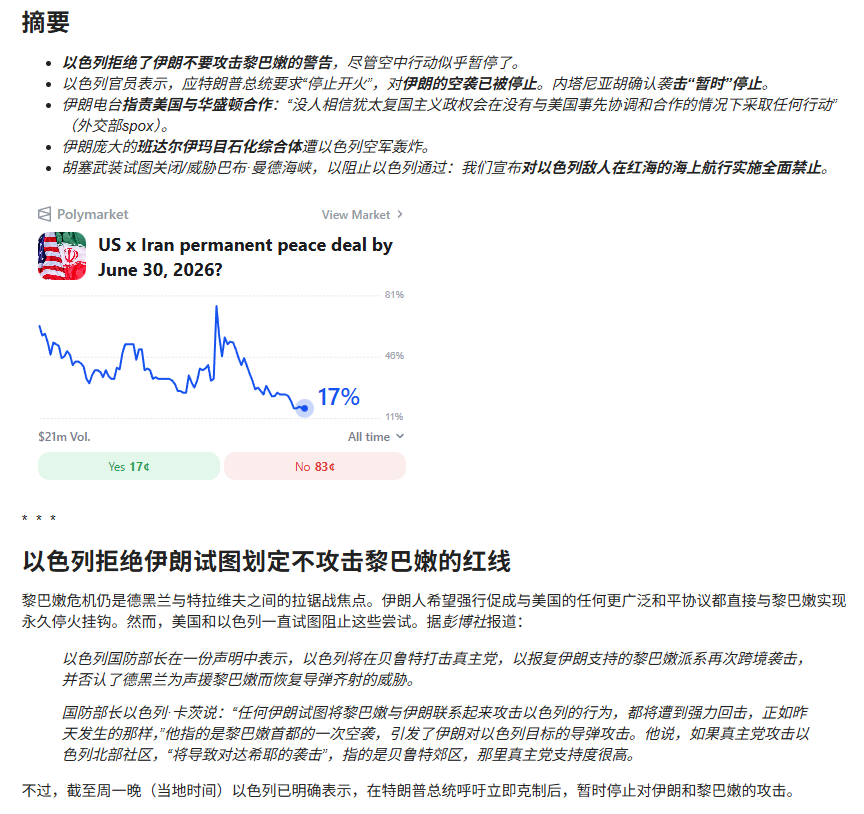
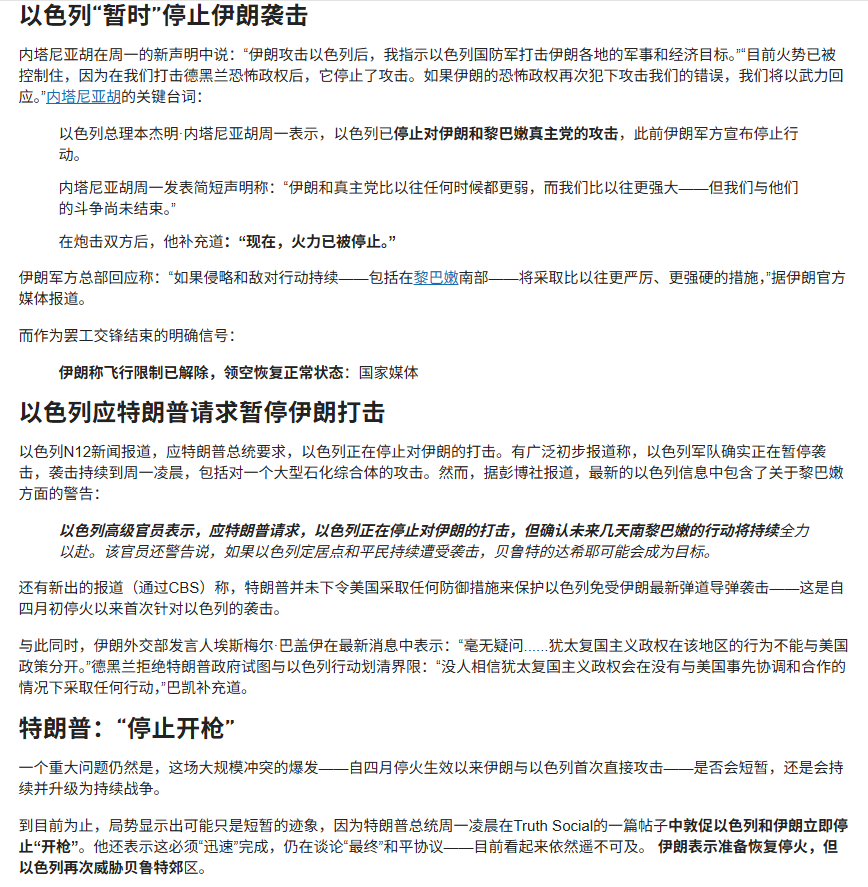
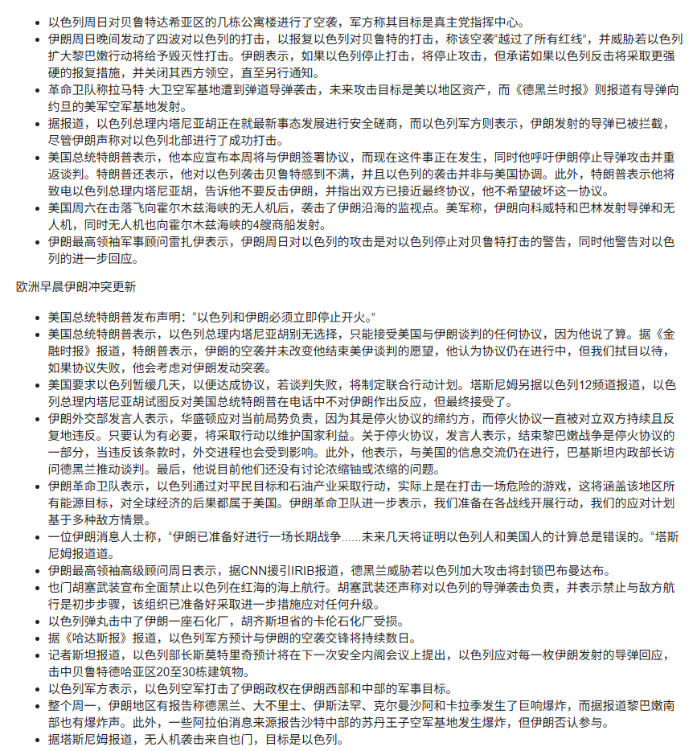
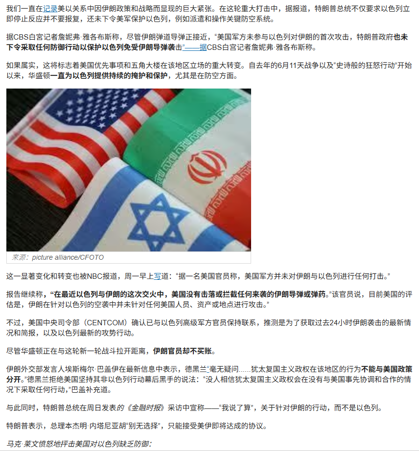
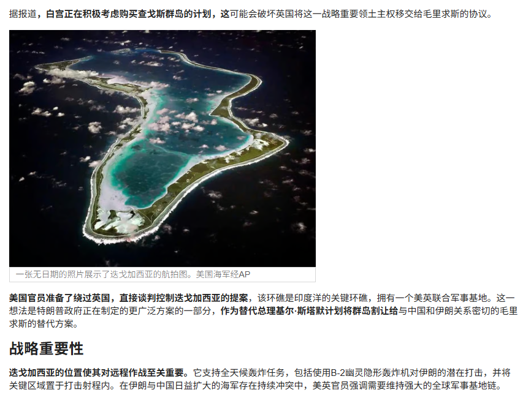
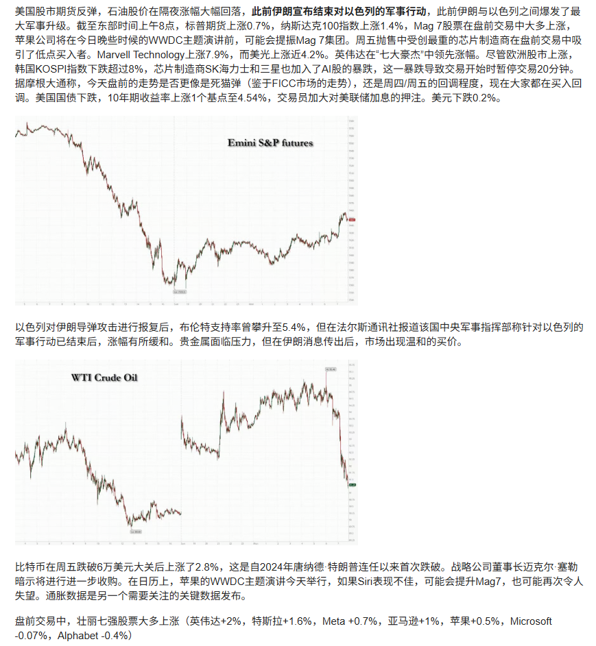
一句话核心： 一篇关于"美国能否劝住以色列、避免对伊朗冲突进一步升级"的长文，配预测市场、地缘配图和市场反应图——地缘风险是当前资产价格的主导变量。
背景与关键数据： 正文只有一句反问"美国能说服以色列的眼红吗？"（意指美国能否劝住跃跃欲试的以色列），但配了 6 张图组成一篇深度报道，主题是美—以—伊三方博弈：以色列想对伊朗动手，美国（特朗普）则希望降温/停火，双方在节奏上有分歧。
图片解读：
- 图1：文章摘要，配预测市场小图"US x Iran permanent peace deal by June 30, 2026?"，成交概率仅约 17%——市场认为短期达成美伊永久和平的可能性很低。
- 图2：小标题含"以色列眼下的核心矛盾""以色列对特朗普请求保持冷静的不满""特朗普：停止空袭"，刻画美以分歧。
- 图3：含"欧洲和美国的潜在分歧"，分析西方阵营内部立场不一。
- 图4：美国/伊朗/以色列三国国旗拼图，讨论三方与伊朗核计划。
- 图5：某环礁/岛屿航拍（疑似迪戈加西亚美军基地），小标题"战略重要性"，讲该基地在对伊军事部署中的角色。
- 图6：文末两张市场图——"Emini S&P futures"（美股期货下挫）和"WTI Crude Oil"（原油波动），展示地缘消息下的市场即时反应。
为什么重要 / 对市场的含义： 这条是今天所有"再通胀+强美元+央行购金"故事的源头变量：美以对伊冲突 → 霍尔木兹海峡/油气供应风险 → 油价高企 → 通胀黏住 → 美联储难降息甚至加息 → 美元强、金价靠地缘支撑。理解了地缘这条主线，今天其余 16 帖就都串起来了。
延伸知识： "预测市场（prediction market）"是用真金白银下注未来事件的平台（如 Polymarket），其价格可读作"市场认为该事件发生的概率"。17% 的"美伊永久和平"概率意味着市场押注冲突大概率延续。预测市场常被认为比民调更准，因为下注者有"说错就亏钱"的约束——这是一种"用钱投票"的群体智慧。
帖 13 ｜15:40 ｜来源：JPM（摩根大通）｜标签：#金融#
帖子原文：
JPM：中国5月外储又一次大超预期，增加317亿美元，升到3.4422万亿美元，5月中国隐含资本外流约 200亿美元。4月结汇率下降，说明企业和居民把外币换成人民币的意愿减弱；但售汇率也下降，说明买外币的意愿也减弱。最终净结汇率从 3.1个百分点 收窄到 0.4个百分点。
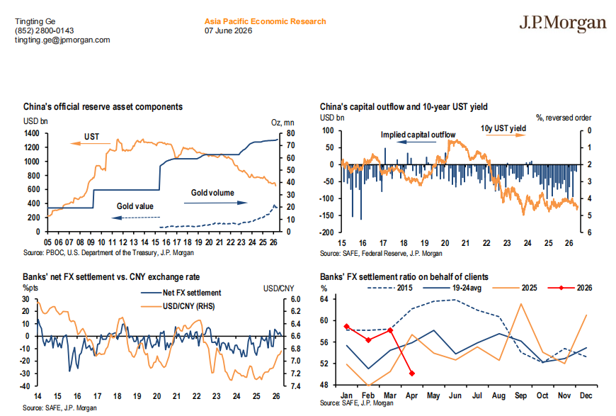
一句话核心： 5 月外汇储备大超预期增 317 亿美元至 3.4422 万亿；但企业居民的"结汇"和"售汇"意愿同时下降，净结汇率从 3.1pp 收窄到 0.4pp——外储增加更多靠估值/汇率因素，而非真实的换汇需求旺盛。
背景与关键数据：
- 外汇储备：央行持有的外币资产，3.4422 万亿美元。它的增减不只看资金进出，还受持有资产（如美债、黄金、欧元资产）的"估值变动"影响。
- 结汇：把外币换成人民币（看涨人民币/需要人民币）。售汇：把人民币换成外币（看跌人民币/需要外币）。
- 净结汇率从 3.1pp 收窄到 0.4pp：结汇和售汇意愿"双双下降"，说明企业和居民对汇率方向都比较观望、交易清淡。
- 隐含资本外流约 200 亿美元：剔除估值因素后，实际仍有资金净流出。
图片解读： JPM 报告四联图：①中国官方储备构成——美债（UST）+ 黄金价值/数量都在上升（呼应帖1/2 央行购金）；②隐含资本外流（柱）约 200 亿美元，与 10 年期美债收益率（线）对照；③银行净结汇率（柱）与 USD/CNY（线）；④分客户结汇率的季节性，叠加 2015、2019-24 均值、2025、2026 多条线对比。共同呈现"外储升但资金面偏淡、仍有外流"的全景。
为什么重要 / 对市场的含义： 外储是观察"资本流动+汇率压力"的窗口。"外储升 + 隐含外流 + 结售汇双降"的组合说明：账面好看，但居民/企业对人民币既不强烈看多也不恐慌看空，处于"观望"状态。这与帖11"央行可控升值、美元阶段性走强缓和压力"的判断吻合——目前汇率压力可控，但内在仍有外流倾向。
延伸知识： 外汇储备变化 ≈ 真实资金流（贸易顺差、外资进出）+ 估值效应（持有资产的市值波动）+ 央行操作。新手常把"外储上升"直接当成"资金流入/经济强"，这是误读。正确做法是剔除估值看"隐含资金流"——今天 JPM 就是这么做的（外储 +317 亿但隐含外流 200 亿），结论是"账面与底层背离"。这是读外储数据的专业姿势。
帖 14 ｜15:46 ｜来源：bloomberg ｜标签：#其他国家经济#
帖子原文：
bloomberg：随着美国汽油价格依然高企，通胀预计将超过4%，选民对特朗普经济的信心正在丧失。根据纽约联邦储备银行周一发布的一项调查，美国人对劳动力市场的看法在五月变得更加悲观，求职者的前景预期降至今年最低点。特朗普似乎非常希望伊朗战争结束，但现在形势依然复杂，原因之一是伊朗虽然经济很惨淡，但忍耐力却比美国高，铁路外部援助也起了作用。
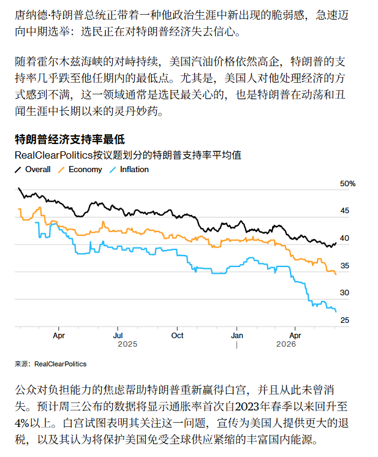
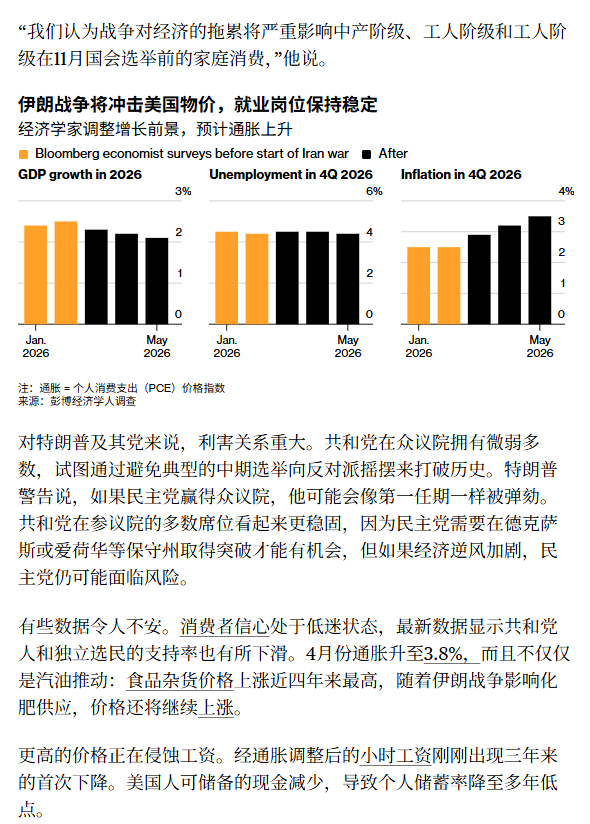
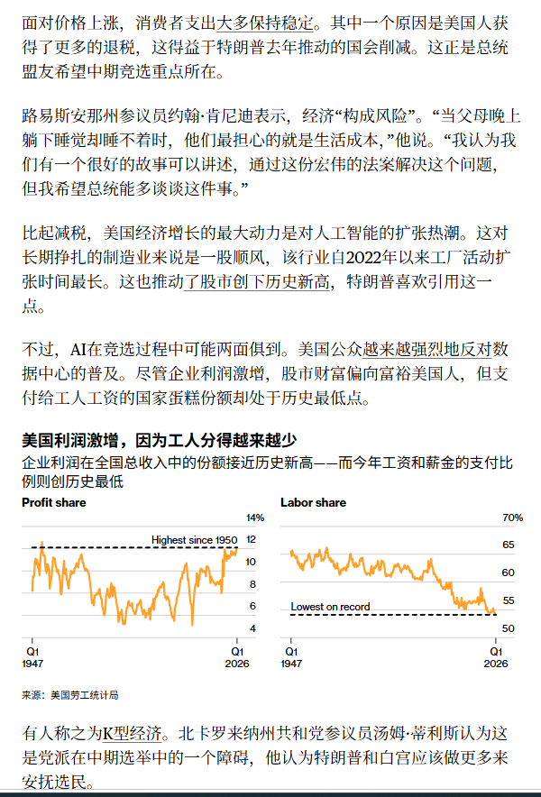
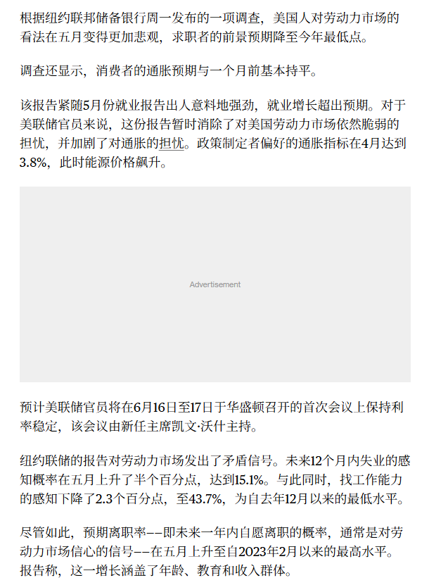
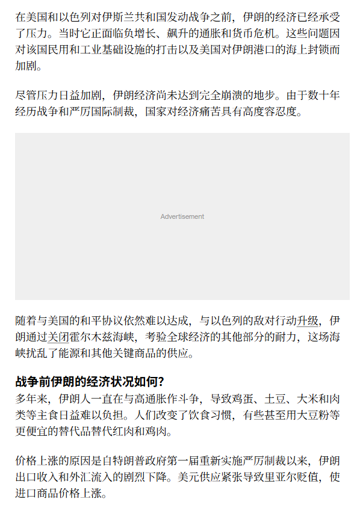
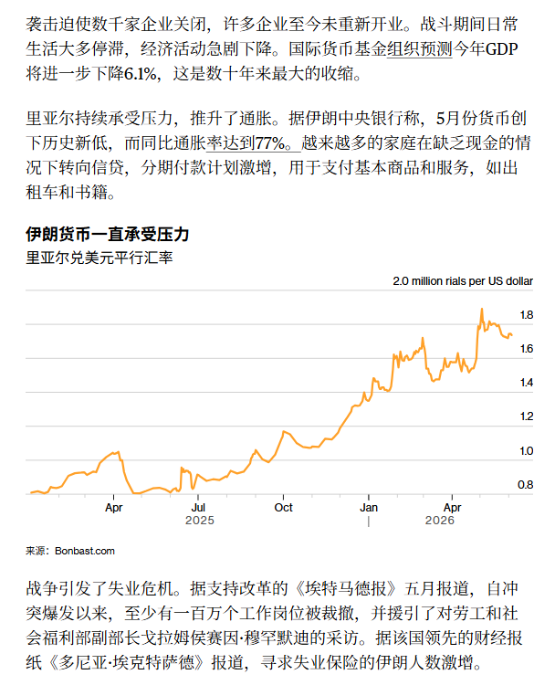
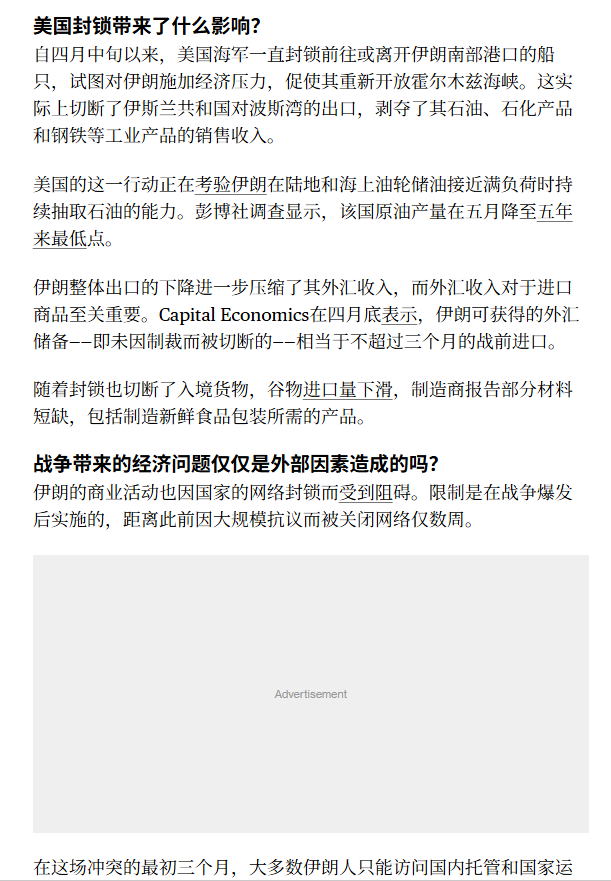
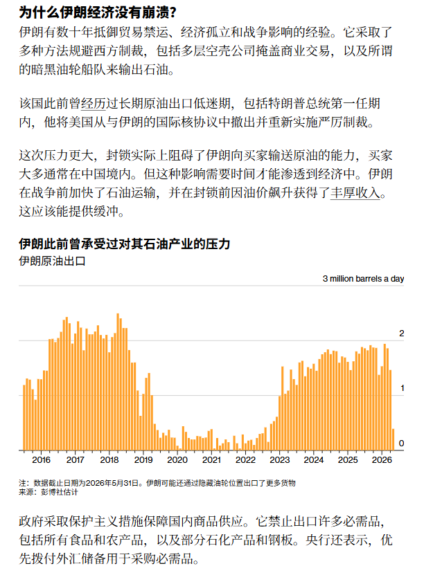
一句话核心： 一篇 Bloomberg 长文，两条线：①油价高企+通胀破 4%，特朗普"经济支持率"创任内新低、逼近中期选举；②伊朗经济极度惨淡（通胀 77%、货币暴贬、GDP 再降 6.1%）但因长期被制裁而"抗揍"，所以战争难以速决。
背景与关键数据：
- 美国：汽油价格高（霍尔木兹对峙所致），通胀预计破 4%，特朗普处理经济的支持率创任内最低；纽约联储调查显示 5 月民众对就业更悲观，找工作信心降到年内低点；4 月 PCE 通胀指标达 3.8%。
- 伊朗：IMF 预测今年 GDP 再降 6.1%（数十年最大收缩）；5 月里亚尔创历史新低、同比通胀 77%；战争引发失业潮（至少百万岗位被裁）。但伊朗靠"影子油轮船队""规避西方制裁""中国为主要买家"维持运转，痛苦容忍度极高。
图片解读：
- 图1：配图"特朗普经济支持率最低"（RealClearPolitics 三线：Overall 约 39%、Economy 约 33%、Inflation 最低约 26%，2025.04–2026.04 全线下行）。
- 图2：三联柱状图，跨国对比"2026 年 GDP 增长 / 2026 上半年失业 / 2026 上半年通胀"。
- 图3：双图"Profit share / Labor share"，对比美国企业利润份额与劳动报酬份额。
- 图4：纯文字（含广告位）——纽约联储调查：消费者对就业更悲观；美联储预计 6/16-17 维持利率。
- 图5：纯文字——战前伊朗经济（负增长、恶性通胀、货币危机、海上封锁加剧）。
- 图6：配图"伊朗里亚尔兑美元平行汇率"（Bonbast），2025.04→2026.04 从约 0.8M 升至约 1.8M 里亚尔/美元（大幅贬值），文称同比通胀 77%。
- 图7：纯文字——"美国封锁的影响"：油轮改道、5 月原油产量降至五年低、银行封锁致现金荒。
- 图8：配图"伊朗原油出口"（2016–2026，百万桶/日），制裁期骤降、后回升、2026 再降；文称伊朗靠影子船队、中国买家维持出口。
为什么重要 / 对市场的含义： 帖12（美以伊冲突）+ 帖14（冲突的两端：美国通胀政治压力 vs 伊朗的韧性）共同说明：这场冲突短期难结束，地缘溢价会持续。 对市场意味着——油价/通胀的上行风险挥之不去，美联储被迫维持偏鹰（呼应帖15 加息预期、帖16 滞胀），避险情绪给黄金托底（呼应帖1/2）。政治上，通胀正在侵蚀特朗普的执政基础，临近中期选举他有"压油价/求停火"的强烈动机，但伊朗不配合。
延伸知识： "经济苦难指数（Misery Index）= 通胀率 + 失业率"，是衡量普通人经济痛苦、也是预测在任者选情的经典指标。帖14 的画面正是这个指数在恶化：通胀破 4% + 就业预期转差 → 执政者支持率下滑。历史上高苦难指数常导致在任党中期选举失利（如 1980 年卡特败于里根）。理解这条，就能把"宏观数据"和"政治走向"打通——而政治走向又会反过来影响政策（特朗普求停火/压油价的动机）。
帖 15 ｜15:51 ｜来源：bloomberg ｜标签：#股市#
帖子原文：
bloomberg：根据BMO资本市场的数据，外汇交易者押注美元持续强势，因为即使石油在边缘性回落——这是一个很大的假设——通胀也不太可能迅速下降；第二轮效应正在积累，相关性正向越来越倾向于利率上升和美元走强，注意，美元走强将削弱依赖卖出美元以投资其他市场仓位的套利策略，通常是新兴市场。不过今天亚洲股市有望从三月以来最大跌幅中反弹，在日经225指数周一下跌近4%后，东京股市期货预计上涨超过2%，而悉尼合约显示小幅上涨
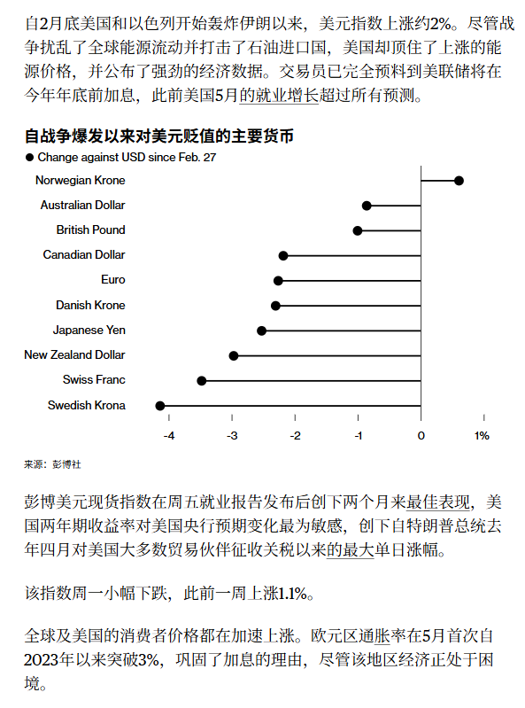
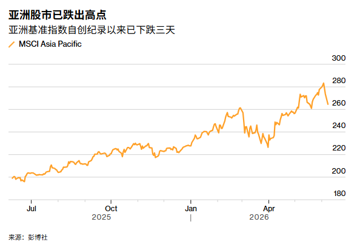
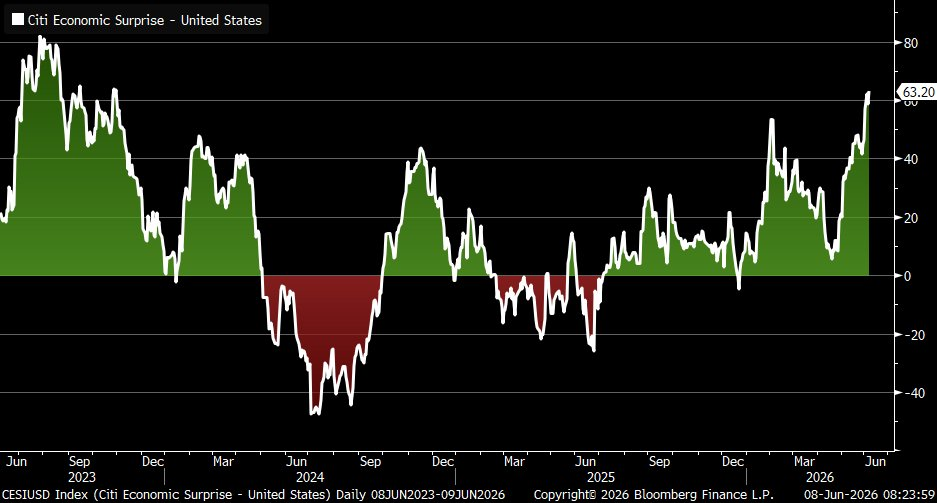
一句话核心： 外汇交易员押注美元持续走强（通胀难快速回落、利率上行预期），强美元会打击"借美元投新兴市场"的套利交易；亚洲股市在大跌后有望技术性反弹。
背景与关键数据：
- 逻辑链：油价即使小幅回落，通胀也难快速降（"第二轮效应"——能源涨价传导到工资、其他商品）→ 利率上行预期 → 美元走强。
- 套利交易（carry trade）：借低息货币（如美元若便宜/日元）去投高息或高回报市场（常是新兴市场）。美元走强会让"卖美元换他币"的套利亏损，可能引发资金回流、新兴市场承压。
- 亚洲股市：日经 225 周一暴跌近 4%，但东京期货预计反弹 >2%，悉尼合约小涨——技术性反弹。
图片解读：
- 图1：Bloomberg 配图"自战争以来对美元贬值的主要货币（自 2 月 27 日起）"。除挪威克朗 +0.6% 外其余全贬：瑞典克朗 −4%、瑞郎 −3.5%、纽元 −3% 最弱，澳元 −0.9%、英镑 −1%。文称美元指数升约 2%，5 月非农超预期、交易员押注年底加息。
- 图2：Bloomberg"亚洲股市已跌出高点——MSCI Asia Pacific"，指数自约 195 升至纪录约 280 后回落到约 258（连跌三天）。
- 图3：Bloomberg 终端"花旗美国经济意外指数（CESIUSD）"，当前 63.20，处于高位且为正（绿），显示美国经济数据持续超预期——这是强美元/加息预期的硬支撑。
为什么重要 / 对市场的含义： 帖15 是帖4（大摩"美股强未必美元强"）的"现实对照"：现在市场正在押"高利率型美国例外论"（强数据→加息→强美元）。如果这个押注兑现，新兴市场（含 A 股、港股）会面临资金外流压力；但若像大摩提醒的、美元强其实缺乏利差支撑，则可能反转。两条结合，给了你一个"看多美元但要留意证伪条件"的平衡视角。
延伸知识： "经济意外指数（Economic Surprise Index）"衡量的不是经济好不好，而是"实际数据 vs 市场预期"的差。指数为正=数据持续好于预期（市场预期偏低）。它常领先于资产价格——数据持续超预期会推动收益率和货币走强。但它有"均值回归"特性：当指数冲到高位（如 63.20），意味着预期已被大幅上修，后续"再超预期"越来越难，反而可能回落。所以高位的意外指数既是"当下强"的证据，也是"未来动能可能见顶"的提示。
帖 16 ｜15:53 ｜来源：花旗（Citi）｜标签：#金融#
帖子原文：
花旗：澳新同时面对滞胀风险。澳洲这边，RBA可能短期暂停，但我们仍预计8月加息25个基点，并且把2027年的降息预期从三次改成一次。为什么？因为价格上涨范围太广，澳洲CPI篮子里大约80%的项目都在涨；同时最低工资上涨4.75%，部分工人涨6%，生产率又弱，所以工资—价格螺旋风险上升。 新西兰这边，我们认为RBNZ可能7月和9月各加一次息，但市场定价大约100个基点加息太多。因为新西兰经济承压更明显，RBNZ可以短期鹰派，但很难完成一个完整加息周期。所以澳新现在是同一个困局：通胀逼央行加息，增长又逼央行停手。这就是滞胀最难受的地方。
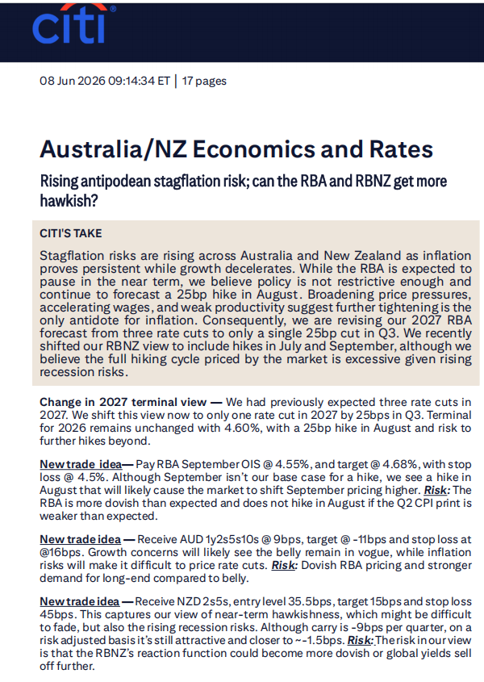
一句话核心： 澳大利亚和新西兰都陷入"滞胀"——通胀广泛（澳洲 CPI 篮子 80% 项目在涨）逼央行加息，但经济疲弱又逼央行停手，两难。
背景与关键数据：
- 滞胀（stagflation）：经济停滞（增长弱）+ 通胀高，同时发生。这是央行最难处理的局面——加息治通胀会压垮增长，降息保增长又会助长通胀。
- 澳洲（RBA=澳洲央行）：CPI 篮子约 80% 项目在涨（通胀"广"而非"局部"）；最低工资涨 4.75%、部分工人涨 6%，但生产率弱 → "工资—价格螺旋"风险。花旗预计 8 月加息 25bp，并把 2027 年降息预期从 3 次砍到 1 次。
- 新西兰（RBNZ=新西兰央行）：花旗认为 7 月、9 月各加一次，但市场定价的约 100bp 加息太多，因为新西兰经济更弱、撑不起完整加息周期。
图片解读： 花旗（Citi Research）研报截图，标题"Australia/NZ Economics and Rates——澳新滞胀风险上升：RBA 与 RBNZ 能否更鹰派？"（2026-06-08）。报告分列对 RBA 和 RBNZ 的观点要点，即帖子正文内容的来源。
为什么重要 / 对市场的含义： 澳新是观察"全球再通胀+滞胀"的小样本。它们的困局是今天全球主题的缩影：油价/工资推动的通胀很"黏"，但增长又不强，央行被迫在"防通胀"和"保增长"之间走钢丝。对资产意味着——利率"higher for longer"（更高更久），对利率敏感的资产（成长股、长债、地产）持续承压。
延伸知识： "工资—价格螺旋（wage-price spiral）"：物价涨→工人要求加薪→企业成本升→再涨价→再要求加薪……自我强化的通胀循环。打破它的关键是"生产率提升"（同样的工资产出更多，成本不会失控）或需求降温。澳洲"工资涨但生产率弱"正是螺旋形成的温床。这也是为什么央行如此看重"单位劳动力成本"——它把工资和生产率放在一起看，是判断通胀黏性的核心指标。
帖 17 ｜16:04 ｜来源：JesusFerna（转引）｜标签：#其他国家经济#
帖子原文：
JesusFerna：泰国的生育率崩塌一直让我很感兴趣。泰国的总和生育率早在 1991年 就跌破了世代更替水平。这个时间非常早。1991年的泰国既不富裕，教育水平也不高，所以很多流行解释都用不到。我认为，泰国是"没有高收入的现代性"最清晰的案例——泰国已经进入了现代社会的生活方式、价值观和消费结构，但还没有达到高收入国家那种收入水平、福利能力和社会保障水平，而这种组合正是人口崩塌的配方。
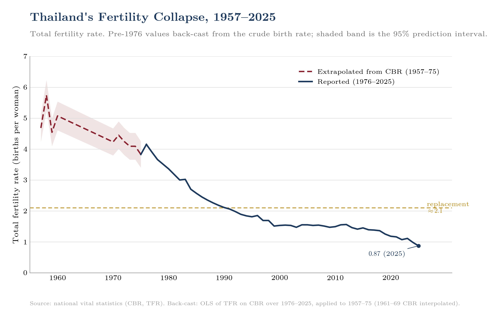
一句话核心： 泰国早在 1991 年（还很穷的时候）就跌破生育率更替水平，是"没有高收入的现代性"——先有了现代生活方式，却没有高收入和社会保障——这种组合是人口崩塌的配方。
背景与关键数据：
- 总和生育率（TFR）：一个女性一生平均生育的孩子数。世代更替水平 ≈ 2.1（每对夫妇生 2.1 个，人口才能不增不减）。
- 泰国在 1991 年就跌破 2.1，到 2025 年降到 0.87（远低于更替线，甚至低于很多发达国家）。
- 反常之处：通常生育率下降伴随"富裕+高教育"（女性受教育、机会成本高、养育贵），但 1991 年的泰国既不富也教育不高，所以传统解释失灵。作者提出"没有高收入的现代性"假说。
图片解读： 图为"Thailand's Fertility Collapse, 1957–2025"。纵轴是总和生育率（每名女性生育数）。红色虚线（1957–75，由粗出生率回推）从约 4.6 升到约 5.7 的峰值；深蓝实线（1976–2025 实测）从约 5 一路下行，约 1990 年穿过橙色虚线标注的"更替线 ≈ 2.1"，继续跌到 2025 年的 0.87。阴影带是 95% 预测区间。一图说尽"断崖式崩塌"。
为什么重要 / 对市场的含义： 人口是最慢但最确定的长期变量。生育率长期低于更替线意味着未来劳动力萎缩、老龄化加速、内需和增长潜力下降、养老/财政压力上升。泰国的案例对所有中等收入国家（包括中国）都有警示意义——不必等到"富起来"，现代化的生活方式本身就可能先压垮生育率，即所谓"未富先老"。
延伸知识： "人口红利"指劳动年龄人口占比高、抚养负担轻时对经济的助推；红利消退后是"人口负债"。生育率的特殊在于它有约 20–30 年的滞后效应——今天的低生育率，要到一代人之后才完全体现在劳动力上，但一旦体现就极难逆转（已经没生的孩子补不回来）。这也是为什么各国对生育率数据高度敏感：它是少数能"提前几十年看到结局"的宏观变量。 泰国 0.87 的数字，基本锁定了它未来几十年的人口收缩轨迹。
今日全图索引
| 帖号 | 时间 | 来源 | 主题 | 标签 | 图片文件 |
|---|---|---|---|---|---|
| 1 | 14:01 | 华泰 | 新兴市场/海湾国家是央行购金主力，现金流收紧 | #金融# | post1_img1.png |
| 2 | 14:03 | 中金 | 央行购金动力不足、已现净卖出；金价与实际利率转正相关 | #金融# | post2_img1~3.png |
| 3 | 14:06 | 中指院 | 5月二手房挂牌价环比−0.38%/同比−7.77% | #房价# | post3_img1.png |
| 4 | 14:10 | 摩根士丹利 | 美股跑赢未必强美元，关键看利差；6月FOMC定调 | #金融# | post4_img1.png |
| 5 | 14:12 | 瑞联 | 重点城市成交均价17,755元，同比−9.05%，环比跌幅连4月收窄 | #房价# | post5_img1~2.png |
| 6 | 14:15 | JPM | 一线去化周期18.6个月仍偏高；香港房价年内+9.6% | #房价# | post6_img1.png |
| 7 | 14:19 | 粤开 | 上市房企有息负债6.9万亿，连降三年 | #A股# | post7_img1.png |
| 8 | 14:38 | 乘联会 | 5月乘用车零售−22.1%，全年预测下调至−11% | #经济数据# | post8_img1.png |
| 9 | 14:43 | 信堡 | 资产荒压低城投票面至1.94%，风险被低估 | #TAX# | post9_img1.png |
| 10 | 15:13 | 中金 | 调整后中国政府杠杆率95%反超日美；中美利率对比 | #TAX# | post10_img1~2.png |
| 11 | 15:19 | 高盛 | 央行可控升值（年化~4%），12个月USD/CNY或到6.50 | #经济数据# | post11_img1.png |
| 12 | 15:29 | zerohedge | 美能否劝住以色列？美以伊冲突与油价 | #金融# | post12_img1~6.png |
| 13 | 15:40 | JPM | 5月外储增317亿至3.4422万亿，隐含外流~200亿 | #金融# | post13_img1.png |
| 14 | 15:46 | bloomberg | 油价/通胀压低特朗普支持率；伊朗经济惨但韧性强 | #其他国家经济# | post14_img1~8.png |
| 15 | 15:51 | bloomberg | 交易员押注强美元；亚洲股市技术反弹 | #股市# | post15_img1~3.png |
| 16 | 15:53 | 花旗 | 澳新滞胀两难，RBA/RBNZ或加息 | #金融# | post16_img1.png |
| 17 | 16:04 | JesusFerna | 泰国生育率1991年破更替线，2025年仅0.87 | #其他国家经济# | post17_img1.png |
图片原图保存在
jason_images/2026-06-08/子目录；本报告最终版已将图片内嵌为 base64，单文件即可查看。